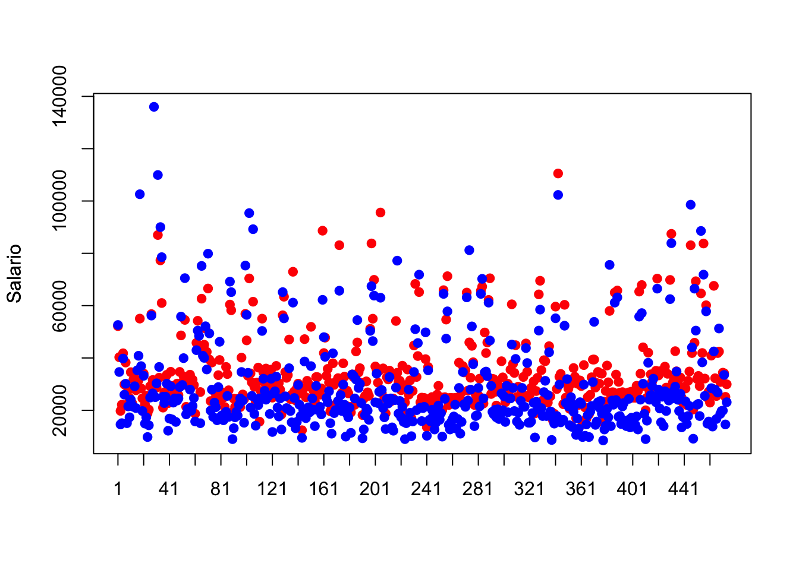

Capítulo 4 Regresión Lineal Múltiple
Esta sesión trata sobre la regresión lineal, que es un enfoque sencillo dentro de los algoritmos de aprendizaje supervisado y que se utiliza principalmente para predecir respuestas cuantitativas. Aunque puede parecer menos emocionante que otros métodos estadísticos más modernos, la regresión lineal sigue siendo una herramienta ampliamente utilizada y útil. Queremos destacar que es una base importante para comprender métodos más complejos, ya que muchos de estos métodos se pueden ver como extensiones de la regresión lineal. Por lo tanto es importante comprender la regresión lineal antes de abordar métodos de aprendizaje más avanzados. El enfoque principal de esta sesión es revisar las ideas clave detrás del modelo de regresión lineal y el método de mínimos cuadrados utilizado para ajustar este modelo.
La regresión múltiple tiene como objetivo analizar un modelo que pretende explicar el comportamiento de una variable (endógena, explicada o dependiente), que se denota como \(Y\), utilizando la información proporcionada por los valores tomados por un conjunto de variables explicativas (exógenas o independientes), que se denotan por \(X_1, X_2,\dots, X_p\). El modelo lineal (modelo econométrico) viene dado de la forma:
\[\begin{equation}\label{eq:modelo} Y=\beta_0+\beta_1 X_1+\beta_2 X_2+\dots+\beta_p X_p +e \end{equation}\]donde \(\beta_0,\beta_1,\dots,\beta_p\) son parámetros desconocidos (o coeficientes) y \(e\) es un termino aleatorio de error, que es independiente de las variables explicativas \(X_1, X_2,\dots, X_p\) y tiene media cero.
4.1 Estimación de los parámetros. Método de los mínimos cuadrados.
Supongamos que tenemos una muestra de tamaño \(n\) en la que hemos observado las variables \[Y=\begin{pmatrix}y_1\\y_2\\ \vdots\\y_n \end{pmatrix};\quad X=(1, X_1, X_2,\dots, X_p)=\begin{pmatrix} 1&x_{11}&x_{12}&\dots&x_{1p}\\ 1&x_{21}&x_{22}&\dots&x_{2p}\\ &&&\vdots&\\ 1&x_{n1}&x_{n2}&\dots&x_{np} \end{pmatrix}\]
Si denotamos por \[\beta=\begin{pmatrix}\beta_0\\\beta_1\\\vdots\\\beta_p\end{pmatrix}\] el modelo econométrico se puede expresar en forma matricial como \[Y=X\beta+E\] Teorema
Si las columnas de \(X\) son linealmente independientes, entonces el estimador mínimo cuadrático de los coeficientes del modelo sería \[\widehat{\beta}=(X^tX)^{-1}X^tY\] donde \(X^t\) denota la matriz traspuesta de X.
Demostración: Denotemos por \(\widehat{Y}=X\widehat{\beta}\) tenemois que los terminos de error (o residuos) se pueden escribir como \(e_i=y_i-\widehat{y}_i=y_i-\widehat{\beta_0}+\widehat{\beta_1}x_{i1}-\widehat{\beta_2}x_{i2}-\dots-\widehat{\beta_p}x_{ip}\). El método de estimación mínimo cuadrático consiste en obtener el vector de coeficientes \(\widehat{\beta}\) que minimiza la suma de los errores al cuadrado. Teniendo en cuenta que al ser escalares \(Y^tX\widehat{\beta}=\widehat{\beta}^tX^tY\), se verifica que la suma de los errores al cuadrado se puede escribir como
\[\begin{eqnarray} RSS&=&\sum_{i=1}^ne_i^2=[Y-X\widehat{\beta}]^t[Y-X\widehat{\beta}]=\\ &=&Y^tY-Y^tX\widehat{\beta}-\widehat{\beta}^tX^tY+\widehat{\beta}^tX^tX\widehat{\beta}=\\ &=&Y^tY-2Y^tX\widehat{\beta}+\widehat{\beta}^tX^tX\widehat{\beta}. \end{eqnarray}\]Para minimizar \(RSS\) tenemos que resolver la ecuación \[\frac{\partial RSS}{\partial \widehat{\beta}}=-2Y^tX+2\widehat{\beta}^tX^tX=0\] y por tanto como las columnas de \(X\) son linealmente independientes existe la inversa de la matriz \(X^tX\) obteniendo \[\widehat{\beta}=(X^tX)^{-1}X^tY\] tal y como queriamos demostrar.\(\square\)
Obsérvese que \(\widehat{\beta}_i\) midel el cambbio en \(Y\) por cada cambio unitario en \(X_i\) para todo \(i=1, 2,\dots, p\). Además si comprobamos que los residuos son homocedásticos, independientes e identicamente distribuidos como una distribución \(N(0,\sigma^2)\), tenemos que \(Y\) se distribuye como \(N(X\widehat{\beta},\sigma^2 I)\). Un estimador de la varianza del error sería: \[\sigma^2=\frac{1}{n-(p+1)}\sum_{i=1}^ne_i^2=\frac{1}{n-(p+1)}\sum_{i=1}^n(y_i-\widehat{y}_i)^2\]
Como \(\widehat{\beta}=(X^tX)^{-1}X^tY\) se verifica que su media es \[\mathbb{E}(\widehat{\beta})=(X^tX)^{-1}X^tE(Y)=(X^tX)^{-1}X^tX\beta=\beta.\] Si queremos hacer inferencia para contrastar una hipotesis nula del estilo \(H_0: \, \beta=0\) tenemos que \[Var(\widehat{\beta})=(X^tX)^{-1}X^tVar(Y)X(X^tX)^{-1}=(X^tX)^{-1}X^t\sigma^2X(X^tX)^{-1}=\sigma^2(X^tX)^{-1}\] y como \(\widehat{\beta}\) es una combinmacion lineal de elementos de \(Y\) bajo \(H_0\) se verifica que \[\widehat{\beta}\sim N(0,\sigma^2(X^tX)^{-1}).\] Esto nos permite hacer inferencia sobre la significatividad de los parámetros estimados \(\widehat{\beta}\), contrastando si significativamente distintos de cero, así como calcular intervalos de confianza para los mismos.
Los coeficientes estimados \(\widehat{\beta}\) nos proporcionan información sobre cuanto aporta cada variable independiente \(X_1, X_2,\dots, X_p\) a la estimación de \(Y\).
4.2 Descomposición de la Varianza y bondad del ajuste.
Basado en la ley del valor esperado total que dice \(\mathbb{E}(Y)=\mathbb{E}(\mathbb{E}(Y|X))\) podemos demostrar el siguiente resultado.
Proposición: Si \(X\) e \(Y\) son dos variables aleatorias definidas en el mismo espacio de probabilidad y suponemos que \(Y\) tiene varianza finita, entonces \[Var(Y)=\mathbb{E}(Var(Y|X))+Var(\mathbb{E}(Y|X))\]
Demostración: Sabemos que \(Var(Y)=\mathbb{E}(Y^2)-\mathbb{E}(Y)^2\) y por tanto \(\mathbb{E}(Y^2)=Var(Y)+\mathbb{E}(Y)^2\). Luego aplicando la ley del valor esperado total a la expresion anterior tenemos que \[\mathbb{E}(Y^2)=\mathbb{E}(Var(Y|X)+\mathbb{E}(Y|X)^2)=\mathbb{E}(Var(Y|X))+\mathbb{E}(\mathbb{E}(Y|X))^2.\] Restando \(\mathbb{E}(Y)^2\) en ambos lados de la igualdad anterior y applicando de nuevo ley del valor esperado total a \(\mathbb{E}(Y)^2=\mathbb{E}(\mathbb{E}(Y|X))^2\) tenemos que
\[\begin{eqnarray} Var(Y)&=&\mathbb{E}(Y^2)-\mathbb{E}(Y)^2=\mathbb{E}(Var(Y|X))+\mathbb{E}(\mathbb{E}(Y|X))^2-\mathbb{E}(Y)^2=\\ &=&\mathbb{E}(Var(Y|X))+\mathbb{E}(\mathbb{E}(Y|X)^2)-\mathbb{E}(\mathbb{E}(Y|X))^2=\mathbb{E}(Var(Y|X))+Var(\mathbb{E}(Y|X)) \end{eqnarray}\]tal y como queriamos demostrar. \(\square\)
Corolario Dado el modelo de regresión lineal \(Y=X\beta+E\) se verifica que \(Var(Y)=Var(E)+Var(\widehat{Y})\)
Demostración: Obsérvese que \(Var(Y|X)=Var(E)=\sigma^2\) y \(\mathbb{E}(Y|X)=\widehat{Y}\). Por lo tanto como consecuencia de la proposición anterior tenemos que \(Var(Y)=\sigma^2+Var(\widehat{Y})\), es decir la varianza total de \(Y\) se descompone como la suma de la varianza explicada por \(\widehat{Y}\) y la varianza de los errores. \(\square\)
4.2.1 Coeficientes de determinación y correlación.
Se define el coeficiente de determinación \(R^2\) como la proporcion de la varianza total que es recogida por la varianza de la variable ajustada, es decir \[R^2=\frac{Var(\widehat{Y})}{Var(Y)}=1-\frac{Var(E)}{Var(Y)}\] De esta última expresión es inmediato ver que \(0\leq R^2\leq 1\). Observese que si \(R^2=0\) significa que \(Var(E)=Var(Y)\) y por la proposición anterior \(Var(\widehat{Y})=0\), por tanto \(\widehat{Y}=E(Y)\) y el modelo no recoge nada de la variabilidad total y como consecuencia el ajuste es malo. En el otro extremo, si \(R^2=1\) se sigue que \(Var(\widehat{Y})=Var(Y)\) y \(Var(E)=0\) y por tanto el modelo recoge toda la variabilidad obteniendo \(Y=\widehat{Y}\) y \(E=0\). De esta manera concluimos que cuanto más cercano esté \(R^2\) a 1 mejor será el ajuste del modelo.
Proposición: Dado el modelo de regresión \(Y=X\beta+E\) se verifica que \[Cov(\widehat{Y},E)=\widehat{Y}^tE=0\]
Demostración: Como \(E\) tiene media cero, se sigue que \(Cov(\widehat{Y},E)=\mathbb{E}(\widehat{Y}^tE)=\mathbb{E}(\widehat{\beta}^tX^t(Y-\widehat{Y}))=\\=\mathbb{E}(Y^tX(X^tX)^{-1}X^tY-Y^tX(X^tX)^{-1}X^tX(X^tX)^{-1}X^tY)=0 \quad\square\)
Definition Dadas dos variables estadísticas \(U\) y \(V\), se define el coefficiente de correlacion de Pearson de \(U\) y \(V\) como \[Cor(U,V)=\rho_{UV}=\frac{Cov(U,V)}{\sqrt{Var(U)Var(V)}}\]
Teorema:El coeficiente de determinacion \(R^2\) coincide con el coeficiente de correlacion dde Pearson de las variables \(Y\) e \(\widehat{Y}\) al cuadrado: \[R^2=Cor(\widehat{Y},Y)^2\]
Demostración: Como \(\mathbb{E}(\widehat{Y})=\mathbb{E}(Y)\) y \(Cov(\widehat{Y},E)=0\) tenemos que
\[\begin{eqnarray} Cor(\widehat{Y},Y)&=&\frac{(\widehat{Y}-\mathbb{E}(Y))^t(Y-\mathbb{E}(Y))}{\sqrt{Var(Y)Var(\widehat{Y})}}=\frac{(\widehat{Y}-\mathbb{E}(Y))^t(Y-\widehat{Y}+\widehat{Y}-\mathbb{E}(Y))}{\sqrt{Var(Y)Var(\widehat{Y})}}=\\ &=&\frac{(\widehat{Y}-\mathbb{E}(Y))^t(E+\widehat{Y}-\mathbb{E}(Y))}{\sqrt{Var(Y)Var(\widehat{Y})}}=\frac{(\widehat{Y}-\mathbb{E}(Y))^t(\widehat{Y}-\mathbb{E}(Y))}{\sqrt{Var(Y)Var(\widehat{Y})}}=\\ &=&\frac{\sqrt{Var(\widehat{Y})}}{\sqrt{Var(Y)}} \end{eqnarray}\]y por tanto \(Cor(\widehat{Y},Y)=R^2\) tal y como queríamos demostrar.\(\quad \square\)
4.2.2 Coeficientes de determinación semi-parcial y parcial
Para conocer cuanto contribuye la variable \(X_k\) de manera única al modelo de regresión, podemos pensar en cuanto se modifica el coeficiente de determinación al excluir esta variable en la regresión lineal. De esta manera si denotamos por \(R_{-k}^2\) el coefficiente de determinación del modelo de regresión lineal omitiendo la variable \(X_k\) la cantidad \[R^2-R_{-k}^2\] es una manera de cuantificar cuanta información única sobre \(Y\) en \(X_k\) no está explicada por el resto de variables indeependientes. Esta cantidad es conocida como coeficiente de determinación semi-parcial. Se define el coefficiente de determinacion parcial como \[\frac{R^2-R^2_{-k}}{1-R^2_{-k}}\]
Teorema: Sea \(U\) el residuo de la regresión lineal de una variable independiente \(X_k\) sobre el resto de las variables independientes \(X_i\) con \(i\neq k\). Denotemos por \(\widehat{Y}_{-k}\) y \(V\) los valores ajustados de \(Y\) y los residuos cuando hacemos la resgesion de \(Y\) sobre todas las variables independientes excepto \(X_k\) respectivamente. Entonces el coeficiente de determinación semi-parcial y el coeficiente de determinación parcial se pueden calcular como:
\[R^2-R^2_{-k}=Cor(Y,U)^2 \quad\quad\quad\quad\frac{R^2-R^2_{-k}}{1-R^2_{-k}}=Cor(U,V)^2\] Demostración: La demostración la haremos utilizando algebra lineal. Para ello utilizaremos algunos conceptos básicos. Denotamos el producto escalar de dos vectores \(S\) y \(W\) por \(\langle S, W \rangle=S^tW=\sum_{i=1}^n s_iw_i\) y su norma por \(||S||=\sqrt{\langle S, S\rangle}\). Sabemos que si \(S\) y \(W\) son ortogonales entonves \(\langle S,W\rangle=0\). Sea la matriz \(P_{-k}\) la proyección ortogonal en el espacio generado por todas las variables independientes excepto \(X_k\). Es conocido que la matriz \(P_{-k}\) es simétrica e idempotente, es decir \(P_{-k}^2=P_{-k}\). Entonces se tiene que \(P_{-k}Y=\widehat{Y}_{-k}\) y \(U=X_k-\widehat{X}_k=(I-P_{-k})X_k\). Además \(U\) es ortogonal a todos los \(X_i\) con \(i\neq k\) ya que \(\langle U,X_i\rangle=U^tX_i=X_k^t(I-P_{-k})X_i=X_k^t(X_i-X_i)=0\). Por lo tanto, \(\widehat{Y}\) que es la proyeccion ortogonal de \(Y\) en el espacio generado por todas las variables predictoras se puede descomponer como la suma de la proyección ortogonal sobre el espacio generado por todas la variables excepto \(X_k\) y uno ortogonal a este, e.g. el generado por \(U\). Pero la proyeccion de \(Y\) en el espacio generado por \(U\) es el valor estimado de la recta de regrsion de \(Y\) sobre \(U\), es decir \(\frac{\langle Y,U\rangle}{||U||}U\). Por tanto tenemos que \[\widehat{Y}=\widehat{Y}_{-k}+\frac{\langle Y,U\rangle}{||U||^2}U\] y teniendo en cuenta que \(Y_{-k}\) y \(U\) son oryogonales calculando la norma al cuadrado en la expresion anterior \[||Y||^2=||Y_{-k}||^2+\frac{\langle Y,U\rangle^2}{||U||^2}.\] Utilizando estas expresiones y que \(\mathbb{E}(Y)=\mathbb{E}(\widehat{Y})\) tenemos que
\[\begin{eqnarray} R^2&=&1-\frac{Var(E)}{Var(Y)}=1-\frac{Var(Y)-Var(\widehat{Y})}{Var(Y)}=1-\frac{||Y||^2-||\widehat{Y}||^2}{||Y-\mathbb{E}(Y)||^2}\\ &=&1-\frac{||Y||^2-||\widehat{Y}_{-k}||^2-\frac{\langle Y,U\rangle^2}{||U||^2}}{||Y-\mathbb{E}(Y)||^2}\\ &=&1-\frac{||Y-\widehat{Y}_{-k}||^2}{||Y-\mathbb{E}(Y)||^2}+\frac{\frac{\langle Y,U\rangle^2}{||U||^2}}{||Y-\mathbb{E}(Y)||^2}=R^2_{-k}+\frac{\langle Y,U\rangle^2}{||Y-\mathbb{E}(Y)||^2||U||^2}\\ &=&R^2_{-k}+ Cor(Y,U) \end{eqnarray}\]Luego el coeficiente de determinación semi-parcial queda \(R^2-R^2_{-k}=Cor(Y,U)^2\).
Por otro lado como \(1-R^2_{-k}=1-(1-\frac{Var(V)}{Var(Y)})=\frac{||V||^2}{||Y-\mathbb{E}(Y)||^2}\) y \(\widehat{Y}_{-k}\) es ortogonal a \(U\), tenemos que el coeficiente de determinación parcial es
\[\frac{R^2-R^2_{-k}}{1-R^2_{-k}}=\frac{\frac{\langle Y,U\rangle^2}{||Y-\mathbb{E}(Y)||^2||U||^2}}{\frac{||V||^2}{||Y-\mathbb{E}(Y)||^2}}=\frac{\langle Y,U\rangle^2}{||U||^2||V||^2}=\\ =\frac{\langle Y-\widehat{Y}_{-k},U\rangle^2}{||U||^2||V||^2}=\frac{\langle V,U\rangle^2}{||U||^2||V||^2}=Cor(U,V)^2\] tal y como queríamos demostrar.\(\,\square\)
Como consecuencia el coeficiente de determinación semi-parcial tiene dos interpretaciones:
1.- La mejora en \(R^2\) que resulta de introducir la variable \(X_k\) en el modelo de regresión que ya incluía al resto de variables independientes.
2.- Es el coeficiente de determinación de la regresión lineal simple de \(Y\) sobre \(U\).
Asimismo, el coeficiente de determinación parcial se puede interpretar como:
1.- La fracción de la máxima mejorta posible en \(R^2\) al que contribuye la variable \(X_k\).
2.- Es el coeficiente de determinación de la regresión simple de \(V\) sobre \(U\).
4.3 Ejemplo de regresión lineal múltiple con R
Carguemos la base de datos de empleados

Expliquemos con un modelo de regresión lineal el salario de los trabajadores como función del salario inicial, el nivel educativo del trabajador y los meses de experiencia previa. Para ello en R tenemos que indicar las variables a relacionar de la siguiente manera:
El modelo de regresión se estima utilizando el comando lm y un resumen del modelo aparece con el comando summary tal y como mostramos a continuación:
> modols<-lm(formula)
> summary(modols)
#>
#> Call:
#> lm(formula = formula)
#>
#> Residuals:
#> Min 1Q Median 3Q Max
#> -28853 -4167 -1172 2724 48701
#>
#> Coefficients:
#> Estimate Std. Error t value Pr(>|t|)
#> (Intercept) -3.662e+03 1.935e+03 -1.892 0.0591 .
#> datos$salini 1.749e+00 5.989e-02 29.198 < 2e-16 ***
#> datos$educ 7.360e+02 1.687e+02 4.363 1.58e-05 ***
#> datos$expprev -1.673e+01 3.605e+00 -4.641 4.51e-06 ***
#> ---
#> Signif. codes:
#> 0 '***' 0.001 '**' 0.01 '*' 0.05 '.' 0.1 ' ' 1
#>
#> Residual standard error: 7632 on 470 degrees of freedom
#> Multiple R-squared: 0.8015, Adjusted R-squared: 0.8002
#> F-statistic: 632.6 on 3 and 470 DF, p-value: < 2.2e-16Obsérvese, que el salario inicial y el nivel educativo tienen un impacto positivo y significativo en el salario de la persona, mientras que los años de experiencia, a pesar de ser significativo en el modelo, tiene un impacto negativo en el salario del empleado. EL coeficiente de determinación del modelo es de \(R^2=0.8015\) y por tanto podemos decir que el modelo recoge aproximadamente el \(80\%\) de la varianza de la variable dependiente lo que significa que es un ajuste bueno.
Podemos obtener los valores predichos por el modelo y representarlos graficamente.
> Yfit=modols$fitted.values
> xx=seq(1,length(Yfit))
> plot(xx,modols$fitted.values,pch=19,col='red',ylim=c(8500,136000),xlab="",ylab="Salario", xaxt="n")
> axis(1, at = seq(1,length(Yfit),20))
> par(new=TRUE)
> plot(datos$salario,pch=19,col='blue',xlab="",ylab="Salario",axes=FALSE)
Podemos ahora calcular las correlaciones parciales de todas las variables intervinientes en el modelo. Por ejemplo calculemos el coeficiente de correlación parcial de la variable expprev en el modelo *modols. Para ello calculamos \(R^2\) y \(R^2_{-expprev}\) tal y como sigue
> restot=summary(modols)
> R2=restot$r.squared
> modsinexpprev=lm(datos$salario~datos$salini+datos$educ)# modelo sin la variable expprev
> resexpprev=summary(modsinexpprev)
> R2expprev=resexpprev$r.squared
> PartialrR2expprev=(R2-R2expprev)/(1-R2expprev)
> print(PartialrR2expprev)
#> [1] 0.04381444Otra forma de calcularlo sería calculando \(1-SR_{full}/SR_{expprev}\) donde \(SR_{full}\) y \(SR_{expprev}\) son la suma de los cuadrados de los residuos del modelo con todas las variables \(modols\) y el modelo reducido sin la variable expprev, \(modsibexpprev\) respectuivamente.
> PartialrR2expprev2=1-sum(modols$residuals^2)/sum(modsinexpprev$residuals^2)
> print(PartialrR2expprev2)
#> [1] 0.04381444Por tanto tenemos que la mejora máxima en el coeficiente de determinación, \(R^2\), que produce la incorporación de la variable expprev es del \(4.38\%\).
Ejercicio:
1.- Calcula e interpreta los coeficientes de correlación parcial del resto de variables del modelo modols.
2.- Investiga el efecto que puede tener el género del empleado en el salario.